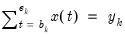
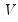
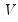

|
|
|
Every series in EViews has an associated frequency. When a series is in a workfile, the series is stored at the frequency of the workfile. When a series is held in a database (“EViews Databases”), it is stored at its own frequency. Since all series in the same workfile page must share a common frequency, moving a series from one workfile to another or from a database to a workfile page will cause the series being moved to be converted to the frequency of the workfile page into which it is being placed.To convert YQ from a quarterly to annual frequency, you may copy-and-paste the series from the source quarterly workfile to the annual workfile. Click on the YQ series in the quarterly workfile, press the right-mouse button and select Copy, navigate to the annual workfile, then right mouse button and select Paste or Paste Special....If you select Paste, EViews will copy YQ to the annual page, using the default frequency conversion settings present in YQ to perform the conversion.If you select Paste Special..., EViews will display a dialog offering you the opportunity to override the default frequency conversion settings. Before describing this dialog (“Overriding Default Conversion Methods”), we provide a background on frequency conversion methods, and describe how default conversion methods are specified in EViews.You may use either the copy or fetch command to move series between workfiles or between a database and a workfile. EViews will perform frequency conversion if the frequencies of the source and destination do not match.Most of these choices are self-descriptive. For example, the Average observations setting will compute the average of the high frequency observations for a given low frequency observation. Similarly, the Minimum observation setting
 in each period
, and and are the beginning and end of each period. For stock variables the constraints apply at specific points in time () where the interpolated series is equal to the benchmark
. For index and flow variables the average or sum of the interpolated series over each period
are equal to the benchmark for that period. For flow variables this process is sometimes called temporal distribution/disaggregation instead of interpolation.
The goal of Denton interpolation is movement preservation: the interpolated seriesshould preserve the movement in the indicator series
as much as possible. While there are many ways to specify the constraint problem, EViews uses the more popular proportional first difference in Equation (5.1) and Equation (5.2), which minimizes the proportional period-to-period change in the interpolated and indicator series. This produces an interpolated series that closely follows the growth rate of the indicator series.
Denton interpolation is a global interpolation method. Changing any point or adding points to the indicator or benchmark series will affect all points in the interpolated series. Also note that Denton interpolation can be performed without an indicator series in a procedure sometimes termed benchmarking (in practice, the indicator seriesin Equation (5.1) is replaced by ones). In cases where the indicator series extends beyond the period covered by the endpoints of the benchmark series,
will be extrapolated with the last benchmark/indicator ratio.
is a vector of coefficients and is a random variable with mean zero and covariance matrix
. The interpolated series is subject to the same constraints as in Equation (5.2) for stock, index, and flow variables. While the original solution by Chow and Lin (1971) used generalized least squares to estimate the covariance matrix assuming that the errors follow an AR(1) process, EViews uses a state space model with the following time series model for the states:
in Equation (5.3) is replaced by a vector of ones). In cases where the indicator series extends beyond the period covered by the endpoints of the benchmark series,
will be extrapolated using the Kalman filter.
Performing frequency conversion when either the source or destination are panel workfile pages raises a number of additional issues. See “Panel links with date matching” and “Panel frequency conversion” for discussion of the general issues.When performing frequency conversion of one or more series, EViews uses the default settings in each series to perform the conversion. These settings may be specified in each series using the Freq Convert tab of the Properties dialog. To access the dialog, click on the Properties button on the series toolbar and select the Freq Convert tab.If the series default setting is set to EViews default, the series will take its frequency conversion setting from the EViews global options (see “Frequency Conversion” in Appendix A. “Global Options”). Here, the high to low conversion is set to Sum observations, overriding the global setting, while the low to high uses the Specified in source setting.As an example of controlling frequency conversion using default settings, suppose you have daily data consisting of HIGH, LOW, and CLOSE series for a particular stock, from which you would like to construct a monthly workfile. If you use the default frequency conversion methods, the monthly workfile will contain series which use the series defaults, which is not likely to be what you want. By setting the frequency conversion method of the HIGH series to Max observation, of the LOW series to Min observation, and of the CLOSE series to Last observation, you may use conversion to populate a monthly workfile with converted daily data that follow the desired behavior.If, when pasting the series into the destination, you use Paste Special... in place of Paste, EViews will display a dialog offering you the opportunity to override the default frequency conversion settings.You need not concern yourself with most of the settings in this dialog at the moment; the dialog is discussed in greater detail in “Frequency conversion links”.Additionally, we note that the dialog allows us to use the frequency conversion method Specified in source or to select alternative methods.If, instead of copy-and-paste, you are using either the copy or fetch command and you provide an option to set the conversion method, then EViews will use this method for all of the series listed in the command (see copy and fetch for details).
 by relating a higher-frequency indicator series
by relating a higher-frequency indicator series  to a lower-frequency benchmark series
to a lower-frequency benchmark series  . This is done by minimizing the proportional first difference function proposed by Denton (1971):
. This is done by minimizing the proportional first difference function proposed by Denton (1971): by relating one or more higher-frequency indicator series
by relating one or more higher-frequency indicator series  to a lower-frequency benchmark series through the equation
to a lower-frequency benchmark series through the equation are estimated via maximum likelihood and the Kalman filter, and the interpolated series is subsequently calculated with Kalman smoothing.
are estimated via maximum likelihood and the Kalman filter, and the interpolated series is subsequently calculated with Kalman smoothing. , which is usually not known. Various techniques use various assumptions about the structure of  beyond the simplest (and unrealistic) case of homoskedastic, uncorrelated residuals. A common flavor of Chow-Lin is Litterman interpolation, in which the covariance matrix is calculated from residuals that follow:
, which is usually not known. Various techniques use various assumptions about the structure of  beyond the simplest (and unrealistic) case of homoskedastic, uncorrelated residuals. A common flavor of Chow-Lin is Litterman interpolation, in which the covariance matrix is calculated from residuals that follow: